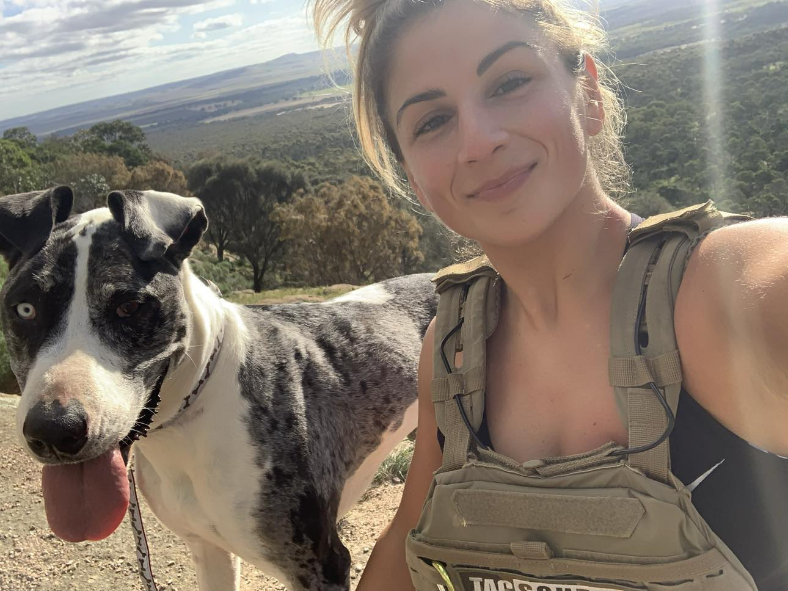

For the past 12 years, I've dedicated myself to the pursuit of
health and fitness, beginning my journey in a CrossFit gym. Over the
first six years, I competed and grew as an athlete, eventually
immersing myself in Olympic weightlifting, where I earned a state
championship medal and competed nationally.
In the last five years, I have worked as a personal trainer, and it
has been an incredible privilege to guide individuals of all ages,
from seniors to school-aged children. My experience has reinforced
my belief that health and fitness are unique to each person—you
don't have to be the strongest in the room, just stronger than you
were yesterday.
After welcoming another baby, I returned to the fitness world with a
renewed perspective. As a mother of three, I understand the
challenges of balancing fitness priorities with daily life. I view
health and fitness as a lifelong commitment, emphasizing hydration,
nutrition, daily movement, and resistance training as
non-negotiables.
My extensive experience and personal journey have taught me how to
seamlessly integrate fitness into everyday life. Working with me
means focusing on becoming the best version of yourself. I'm here to
help you every step of the way, ensuring that your fitness journey
is tailored to your unique needs and goals.
